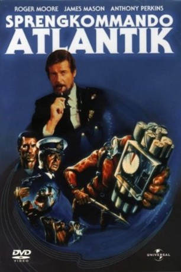

#6894 Sprengkommando Atlantik
Alternativ: ffolkes (Englischer Titel)
 
 IMDB-Wertung: 6.4 / 10
IMDB-Wertung: 6.4 / 10  Metascore: 0
Metascore: 0 
Ein Terrorist nimmt eine BohrInsel in der Nordsee als Geisel und fordert Lösegeld Ffolkes ein reicher exzentrischer Schotte meldet sich freiwillige sein Team zu schicken um die Terroristen zu stoppen. Mit wenig anderen Optionen, akzeptiert die Britische Regierung seine Hilfe.
Jahr: 1980
Dauer: 99 Minuten
FSK: 12
Land: England Studio: CICTonspuren:
Untertitel:
Auflösung: 1080p (1920x1040) Größe: 8949 MB
Genre: Action, Thriller, Abenteuer
Regisseur: Andrew V. McLaglen
Drehbuch: Jack Davies
Soundtrack:
Darsteller:
 Roger Moore als Ffolkes
Roger Moore als Ffolkes James Mason als Admiral Brinsden
James Mason als Admiral Brinsden Anthony Perkins als Kramer
Anthony Perkins als Kramer Michael Parks als Shulman
Michael Parks als Shulman- David Hedison als King
 Jack Watson als Olafsen
Jack Watson als Olafsen George Baker als Fletcher
George Baker als Fletcher- Faith Brook als Prime Minister
- Philip O'Brien als Webb
- Jennifer Hilary als Sarah
- John Lee als Phillips
- Brook Williams als Helicopter Pilot
 Tim Bentinck als Harris
Tim Bentinck als Harris George Leech als Magnussen
George Leech als Magnussen Richard Graydon als Rasmussen
Richard Graydon als Rasmussen- Angela Thorne als Woman on Train
- Jonathan Newth als Kirk
- Jeremy Clyde als Tipping
- David Wood als Herring
- Lea Brodie als Sanna
- Anthony Pullen Shaw als Ackerman
- John Westbrook als Dawnay
- Sabu Kimura als Saburo
- Eiji Kusuhara als Eiji
- David Landbury als Eriksen
- Alastair Llewellyn als Haakon
- Sean Arnold als Schmidt
- Eric Mason als Stallemo
- Thane Bettany als Heyerdal
- Mathias Kilroy als Olsen
- Martin Matthews als Man on Train
- Lindsay Campbell als Shaw
- Robert Swann als Miller
- William Abney als Gail
- Barry Andrews als Truck Driver , uncredited
- David Ashford als Cab Driver , uncredited
- Dinny Powell als Member of ffolkes assault team , uncredited
Datei: X:\1980\Sprengkommando Atlantik (1980, FSK12, 1920x1040).mkv seit 06.09.2017
Festplatte: HD 1980-1986
 Es gibt insgesamt 33 Filme in der Gruppe '1980'
Es gibt insgesamt 33 Filme in der Gruppe '1980'